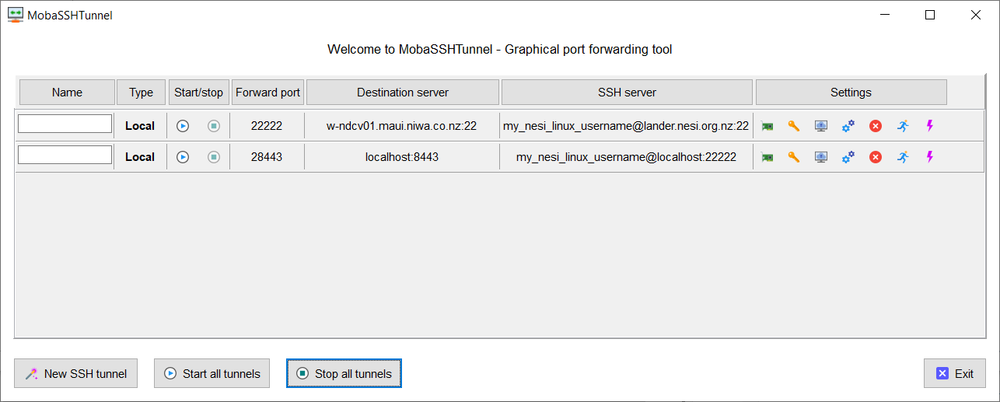

NICE DCV Setup
Warning
This page has been automatically migrated and may contain formatting errors.
NICE DCV is a virtual desktop solution that enables users to run graphics-intensive OpenGL applications, such as 3D visualisation, remotely on the HPC. You get full access to your data on the high-performance file systems, as well as the advanced CPU and GPU capabilities of the Cray CS clusters Mahuika and Māui Ancil.
NICE DCV sessions can persist for as long as your SLURM resource allocation is valid - you could launch a session in the morning, start a complex visualisation job with ParaView or VisIt, disconnect while the machine is still rendering the graphics, and reconnect in the afternoon to check how your job is coming along.
Follow the instructions below to set up a new session and connect to it.
Internet Connection¶
NICE DCV uses image compression mechanisms to reduce the amount of data that needs to be transmitted from the HPC to your laptop or desktop computer. However, data volumes can still become significant for longer sessions. Please keep this in mind if your internet provider charges by data volume.
While NICE DCV works reasonably well over a WiFi connection, for best performance we suggest you use a wired (Ethernet) connection if possible.
Creating a new NICE DCV server session¶
-
Log in to the appropriate host.
On Māui¶
-
Connect to the lander node following the instructions here. For example:
ssh lander -
Connect from the lander node to one of the NICE DCV server nodes:
ssh w-ndcv01
On Mahuika¶
-
Connect to the Mahuika login node:
ssh mahuika -
Connect to the NICE DCV server node (not yet available):
ssh vgpuwbg005
-
-
Create a new NICE DCV session, replacing
<session name>with a session name of your choice:dcv create-session <session name>
Establishing an SSH tunnel¶
For security reasons, the NICE DCV nodes are not on the public internet and so are not directly accessible from your workstation. Therefore, we must create an SSH tunnel through the NeSI lander node.
Linux, Mac, or Windows Subsystem for Linux¶
Prerequisite
If successful, commands to open SSH tunnels will look like they are
doing nothing (hanging) but it is important to leave them running.
Once you kill a relevant SSH tunnel connection (e.g. Ctrl-c) you
will no longer be able to connect to your NICE DCV session.
-
On your machine run the following command in your Linux terminal emulator (assuming you added the recommended sections to your
~/.ssh/configfile). This command opens an SSH tunnel through the NeSI lander node to the SSH port on w-ndcv01.To connect to Māui¶
# The first port number (22222 in this example) can be anything you like > 1024, # so long as it's not in use by another service. # We have picked 22222 because it's easy to remember, the SSH port being 22. ssh -L 22222:w-ndcv01.maui.niwa.co.nz:22 -o ExitOnForwardFailure=yes -N landerIf you don't already have another open connection to or through the NeSI lander node, you will at this point be prompted for your password and your second factor. Enter them in the usual manner.
To connect to Mahuika¶
-
Open an SSH tunnel through the lander node to the Mahuika login node.
# The tunnel port numbers (10022 in this example) can be anything you like > 1024, # so long as neither of them is in use by another service. # We have picked 10022 because it's easy to remember, the SSH port being 22. ssh -L 10022:login.mahuika.nesi.org.nz:22 -o ExitOnForwardFailure=yes -N landerIf you don't already have another open connection to or through the NeSI lander node to the Mahuika login node, you will at this point be prompted for your password and your second factor. Enter them in the usual manner.
-
In a new terminal, open an SSH tunnel through this existing tunnel to Mahuika's NICE DCV node.
# The tunnel port numbers (22222 in this example) can be anything you like > 1024, # so long as neither of them is in use by another service. # We have picked 22222 because it's easy to remember, the SSH port being 22. ssh -L 22222:vgpuwbg005:22 -o ExitOnForwardFailure=yes -N -p 10022 -l <nesi_linux_username> localhostIf prompted for a first factor, enter it in the usual manner. The second factor is optional (you can just press Enter), but if you provide a second factor it must be correct.
-
-
Open a second terminal session, and run the following command in it.
# The first port number (28443 in this example) can be anything you like > 1024, # so long as it's not in use by another service. # We have picked 28443 because it's easy to remember, the NICE DCV port being 8443. ssh -L 28443:localhost:8443 -o ExitOnForwardFailure=yes -N -p 22222 -l <nesi_linux_username> localhostYou will probably be prompted for a first factor and an optional second factor.
Like the above command, this command will apparently hang if successful. Do not interrupt it as it is necessary to hold the port open for the server.
MobaXTerm on Windows¶
If using MobaXTerm on Windows, set up and then start port forwarding connections to look like this:
To connect to Māui¶

When setting up and using the connections, note the following:
To connect to Mahuika¶
A picture is still to come.
- The numbers of the forward ports (fourth column) are arbitrary so long as you set them to be greater than 1024, but the SSH server port for the second connection must be the same as the forward port for the first connection.
- The destination port for the first tunnel must be
22and that for the second tunnel must be8443. - The server port for the first tunnel must be
22. - The tunnel through the lander node must be started before the tunnel through localhost can be started.
- The destination server for the tunnel through the lander node must be the NeSI login node where your NICE DCV server is running.
Connecting to a session¶
NICE DCV comes with a client for Windows and Linux systems, which can be downloaded from the NICE web pages. If you use MacOS, or if you do not want to install the client, you can also connect to your NICE DCV session with a modern browser.
Before you proceed, make sure that you have a valid SLURM allocation on the HPC and that a session has been created.
Connecting with a Client¶
To connect with the NICE DCV client software:
- Launch the client on your laptop or desktop computer.
- Enter the server and session name in the login screen using the
format
localhost:28443#<session_name>, or whatever port number you used for the second SSH tunnel as an alternative to 28443. - Click on "Connect".
- Enter your NeSI Linux username and password.
- Click on "Login".
Connecting with a Browser¶
To connect with a browser:
- Launch the browser or open a new tab
- Enter "https://localhost:28443/#<session name>" in the URL bar. If you used a port other than 28443 when creating the second SSH tunnel, make the necessary modifications to this URL.
- You may need to accept the insecure certificate in your browser before you can proceed
- Enter your HPC account credentials (first factor)
- Click on "Login"
Using the Desktop Environment¶
You should be presented with a Linux desktop environment after successful login with the client or browser. You can then use the application launcher to start an application. You can also launch the terminal application by right-clicking on the desktop and selecting "Konsole". This will give you access to the NeSI software stack that includes various visualisation software solutions.
Disconnecting and Stopping a Session¶
Sessions can persist on the HPC for as long as the SLURM resource allocation is valid. You can disconnect and reconnect to the session as often as you like.
Disconnecting from a session without stopping it¶
- Click on the machine URL in the top-right corner of the NICE DCV window
- Select "Disconnect"
- Close the NICE DCV client or browser window
Disconnecting and stopping a session¶
- Click on the application launcher icon in the top-left corner of the virtual desktop
- Click on "Leave"
- Click on "Log out"
- Confirm the logout in the dialog box that appears
- Close the NICE DCV client or browser window
A running session will automatically stop if your SLURM resource allocation finishes.
Created: July 21, 2021